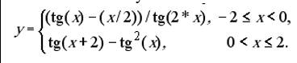
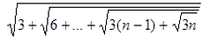
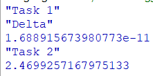

Задача 9.1
Обчислити значення функції у, розвинувши функцію tg(x) у ряд Тейлора подавши її через sin(x) та cos(x). Аргумент х змінюється від -3 до 3 з кроком 0.5. Визначити похибку
Racket — мова програмування загального призначення, що базується на мові Scheme і належить до сімейства мов Lisp. Хоча Racket бере за основу мову Scheme і підтримує виконання програм R5RS та R6RS Scheme, мова Racket має свої розширення і відмінності і підтримує різні парадигми програмування. Однією з особливостей Racket є можливість створення на її основі спеціалізованих мов зі своїм спеціалізованим синтаксисом без потреби використання якихось зовнішніх інструментів на кшталт препроцесорів. Також мова має систему модулів та можливість об'єктно-орієнтованого програмування.
Задача 9.2
Обчислити для заданого натурального числа n вираз:
Код програми
#lang racket
;=================================Task 1==========================
(define (factorial n)
(if (<= n 1)
1
(* n (factorial (- n 1)))
)
)
(define (sine x n)
(cond ((not (null? n))
(cond ((< 25 n)
0)
(else (- (/ (expt x n) (factorial n))
(sine x (+ 2 n))))))
(else (- x (sine x 3))))
)
(define (cose x n)
(cond ((not (null? n))
(cond ((< 25 n)
0)
(else (- (/ (expt x n) (factorial n))
(cose x (+ 2 n))))))
(else (- 1 (cose x 2))))
)
(define (task1_taylor x)
(cond
[(and (>= x -2) (< x 0)) (/ (- (/ (sine x 1) (cose x 0)) (/ x 2))
(/ (sine (* x 2) 1) (cose (* x 0) 1)))
]
[(and (> x 0) (<= x 2)) (- (/ (sine (+ x 2) 1) (cose (+ x 2) 0))
(expt (/ (sine x 1) (cose x 0)) 2))]
[else "Function does not defined"]
)
)
(define (task1_common x)
(cond
[(and (>= x -2) (< x 0)) (/ (- (tan x) (/ x 2))
(tan (* x 2)))
]
[(and (> x 0) (<= x 2)) (- (tan (+ x 2))
(expt (tan x) 2))]
[else "Function does not defined"]
)
)
"Delta"
(- (task1_taylor 2.0) (task1_common 2.0))
;=================================Task 2==========================
(define (task2 n i)
(if (>= i n)
n
(sqrt(+ (* i 3) (task2 n (+ i 1))))
)
)
(task2 1000000 1)
Результати роботи програми
Github link
Висновок
Після проведеної роботи було реалізовано дві програми. Одна знаходить дельту між значеннями функції розрахованими через ряди Тейлора та через вбудовані функції Друга програма знаходить сумму ряду.